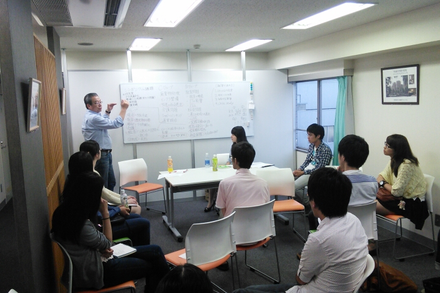
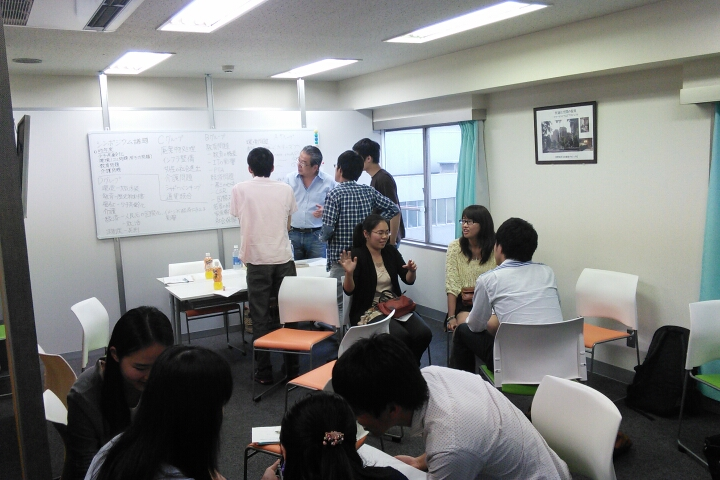

REPORT
2014年JCSN上海・杭州交流会 キックオフミーティング５月上旬から今年の上海・杭州交流会の参加者を募集しました。数倍に及ぶ応募がある中５月下旬に面接を行い参加者１９人を決定いたしました。
そして、6/8に初めてのミーティングが行われ、参加者たちの初めての顔合わせになりました。参加者たちと話すと皆さんそれぞれ中国について関心があり中国についての知識も深いということを感じました。そのため今年のシンポジウムの議題を考えるときに数個に絞り切れないぐらいの議題が出て、今年の議題の決定は次回以降にお預けになりました。
また、キックオフミーティング終了後の懇親会を行い、参加者同士の親睦が深まりました。
＜2014年 JCSN上海・杭州交流会 キックオフミーティング概要＞
・日時 6月8日（日） １４：００～１７：３０
・場所 NPO日中交流推進機構 ６階会議室
・参加者数 日本人学生、中国人留学生計17名
・タイムテーブル
14:00 役員挨拶・事務局長挨拶
14:15 団体紹介・交流会趣旨説明
14:45 参加者自己紹介
15:15 前回交流会の報告
16:00 休憩
16:15 シンポジウムの議題の選定
17:30 閉会＆近くの店にて懇親会

事務局長の話

休憩時間の様子